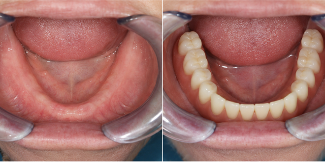

Что было сделано:
Пациентка — женщина, 66 лет. Полностью отсутствовали зубы на нижней челюсти.
Имплантация с последующим протезированием с системой Locator. Установлены 2 импланта Dentium, и проведено протезирование с креплением на локаторах.
Результат:
Пациентка улыбается без стеснения и бесконечно рада своей новой улыбке.